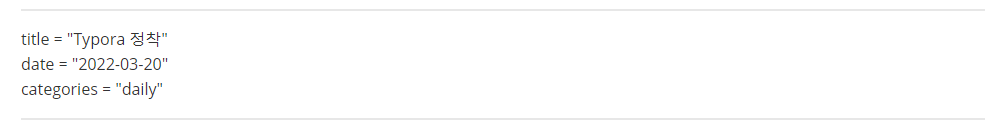
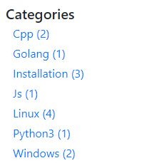
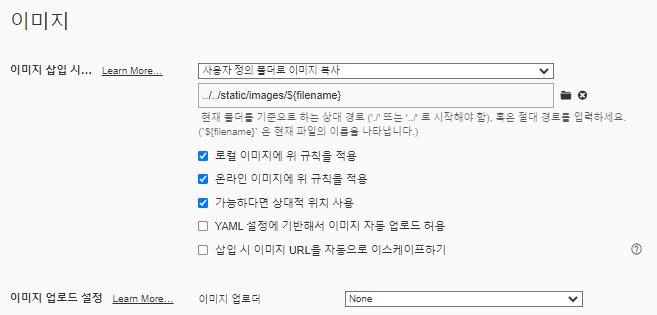
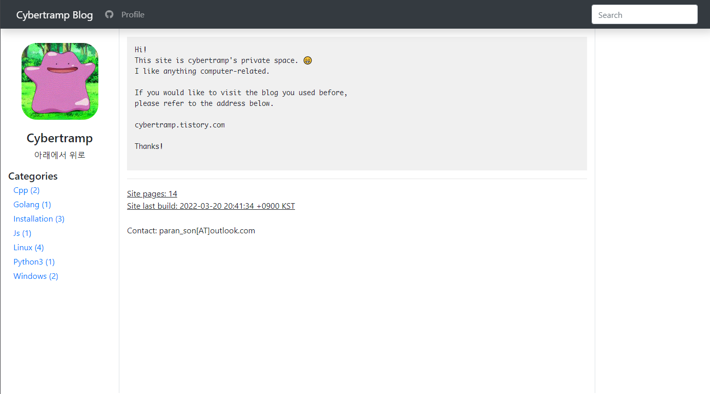

Typora 정착
글을 쓴날: 2022-03-20
이번주 평일에 시간되면 작업하려 했던 블로그 작업을 일요일이 되어서야 겨우 마쳤다. 잘 버티다가 오미크론에 걸리게 되어 거의 아무것도 못하게됬다.
메뉴에 카테고리 넣기
뭐 어찌 어찌 답 없는 hugo의 Book | Hugo Themes (gohugo.io) 테마를 뜯어서 커스텀하게 만들었다. hugo는 GoLang의 Template이라는 모듈을 사용해서 문법이 조금 이해 하기 어렵다. 마치 bash를 보는듯했다. 그래도 hugo 문서랑 뒤적 거리면서 문서별 FrontMatter의 Category를 일일이 확인해서 메뉴에 분류되어 표시되게 해두었다.

▲ 내 포스트 글은 markdown으로 작성하고 맨 윗부분에 FrontMatter를 toml 형식으로 달아둔다.
FrontMatter가 달린 글들은 내가 계속 삽질해서 만든 코드를 통해 리스팅이 가능해진다.

[코드]
# 리스팅
<!-- 1번 방법 -->
{{range $category := ($.Site.GetPage "categories").Pages }}
<li class="nav-item menu-items">
<a href="{{.Permalink}}">{{.Title}} ()</a>
</li>
{{end}}
<!-- 2번 방법 -->
{{ range $name, $taxonomy := .Site.Taxonomies.categories }}
<li class="nav-item menu-items">
<a href="/categories/{{ $name | urlize }}">{{ $name | humanize }} ({{ $taxonomy.Count }})</a>
</li>
{{end}}
위 코드를 적용한다고 몇 시간을 날렸다.. Hugo를 사용한다면 필요한 분은 참조해서 시간을 줄였으면 좋겠다.
Typora 적용하기
전에 잠시 다니던 직장에 멋진 분이 계신데.. 유료가 되어버린 Typora를 선물로 주셨다. 덕분에 사용하던 Mark Text와 Obsidian 은 내 노트북에서 사라질 예정이다.
문제는 Typora를 사용해도 이미지 경로가 꼬여서 노답이 되서 수동으로 옮기는 수고를 해야한다. Typora를 단순 에디터로 사용할때는 사진들을 무조건 현재 파일명에 asset을 붙여서 해당 디렉토리에 넣곤 했었다. 근데 이 방식은 hugo를 통해 markdown을 작성하는 환경에서는 경로를 저렇게 주면 static 사이트로 빌드시 경로가 깨져 이미지가 1도 안보이게 된다. 고민 고민 하다가 인터넷에서 좋은 방법을 찾았다.
[기존]
-
이미지가
/static/img에 저장되게 함위와 같은 경우는 고정 경로는 당연히 이미지 경로가 깨짐.
deploy시 /img로 이미지가 이동해서 경로 다 깨짐.
[적용]
-
모든 post들을 한 디렉토리에 몰고 상대 경로로
../../static/img에 저장되게 함위와 같은 경우는 /content/posts에 post들이 모여있고 모두 상대 경로를 위와 같이하면 빌드때 /img를 참조하게만 하면됨
빌드시 ../../static 을 지워 버리게 대체하도록 하면 됨
이렇게 되면 Typora에 글 쓸때 이미지를 붙여 넣어도 빌드 할때 ../../static 부분이 지워지므로 정상적으로 이미지가 보여짐
[코드]
빌드시에 상대 경로의 일부 스트링을 지우게 하는 코드이다. 이것도 찾는데 개고생했다…
해당 코드는 다음 경로에 넣어야 한다. /layouts/_default/_markup/render-image.html
<!-- 22.03.19 -->
{{ if in .Destination "/static/" }}
{{ $new_file_path := substr .Destination 12 }}
<img src="{{ $new_file_path }}" alt='{{ .Text }}' style="width: 100%;"/>
{{ else }}
<img src="{{ .Destination }}" alt='{{ .Text }}' style="width: 100%;"/>
{{ end }}
위 코드는 /static/을 포함하면, 파일 경로의 앞 부분 12글자를 날려 버리는 코드이다. 12자리 니깐 ../../static이게 날아가는 것이다. 이제 나는 좀 더 편하게 블로그를 작성 할 수 있게됬다.
[Typora에서의 설정]
Typora에서는 상대경로를 아래와 같이 설정 해두면 된다.
그러면 현재 경로가 /content/posts/xxxx.md인 경우에 /static/img로 이미지가 모이게 된다.

느려터진 github io
지금은 github.io 를 통해 호스팅되는 셈인데.. 이게 어마어마 하게 느리다. 물론 내 방에 들어오는 인터넷이 해외망이 기어다닐 정도로 느려서 그런것도 있지만 프로필의 메타몽 사진 하나 불러오는데 무려 4초나 걸린다..
추후에는 내가 가지고 있는 Oracle Free Tier로 블로그를 올리고.. 그래도 느려지면 Vultr에 VM 하나 얻어서 호스팅 해둬야 할 것 같다..
git
내 블로그는 티스토리 때와 달리 git으로 관리 중이다. 물론 commit 하나하나에 상세하게 기록하고 이 정도는 아니지만 이전 상태를 찾아 볼 수는 있을 정도이다.
두가지 repository로 관리를 하는데 하나는 배포용 repository, 다른 하나는 빌드 전 소스코드들의 repository로 구분 해두었다. 빌드 전 소스코드가 담긴 repo는 내 주방에 있는 서버의 gitea에서 안전하게 관리 중이다.
현재 2022.03.21의 블로그
오늘까지 작업한 블로그 치고는 나쁘지 않다. 내 나름 마음에 든다.
이후에는 디자인 적으로도 뭔가 좀 이쁘게 하고 싶다. 심플한걸 좋아해서 이렇게 하긴 했는데 투박해 보이기도하고…

comments powered by Disqus